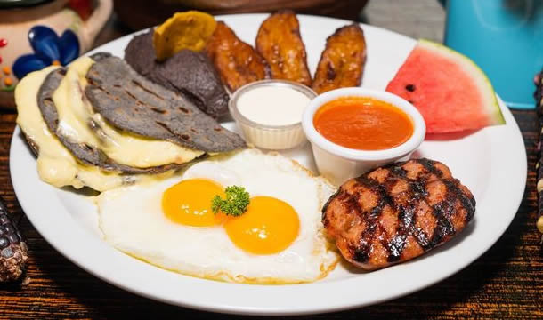

Saborea el amanecer con huevitos preparados a tu estilo, acompañados de frijoles volteados, plátanos fritos, queso panela y nuestra exclusiva salsa roja.

Deléitate con huevos al gusto y el corte del día, acompañados de chirmolito auténtico, frijoles volteados, plátanos fritos y queso panela. Acompañado de panqueues ¡El inicio perfecto para cualquier día!.
Nuestro omelette relleno de queso mozzarella. Servido con frijol cremoso, plátanos fritos, ques panela y nuestra especial salsa guacalantro plátanos.¡Una elección perfecta para los amantes de los sabores frescos y naturales!